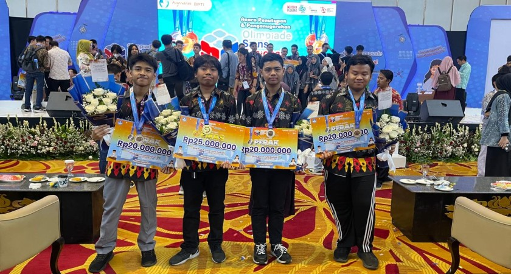
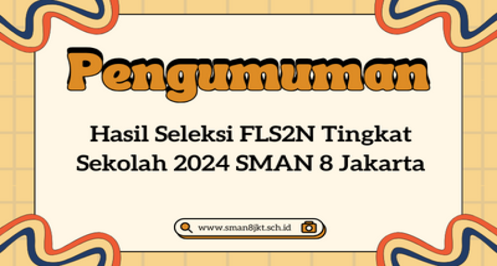

Berita & Pengumuman
Ikuti informasi dan kegiatan terbaru dari sekolah kami.

28 Oktober 2025
Siswa SMAN 8 Jakarta Meraih 4 Medali Emas dan Perak dalam OSN 2024
Empat pelajar SMA Negeri 8 Jakarta kembali unjuk prestasi pada Olimpiade Sains Nasional Tingkat Nasional Jenjang SMA/MA/Sederajat Tahun 2024, membawa pulang 1 medali
Baca Selengkapnya...
25 Oktober 2025
Siswi SMAN 8 Jakarta Berhasil Meraih Medali Perak dalam IBO 2024
Diberitahukan kepada seluruh siswa kelas X, XI, dan XII bahwa Ujian Tengah Semester (UTS) Ganjil akan dilaksanakan mulai tanggal 4 November...
Baca Selengkapnya...

20 Oktober 2025
Pengumuman Hasil Seleksi FLS2N Tingkat Sekolah 2024 SMAN 8 Jakarta
SMA Negeri 8 Jakarta akan segera membuka pendaftaran untuk peserta didik baru. Pantau terus website kami untuk informasi tanggal penting...
Baca Selengkapnya...